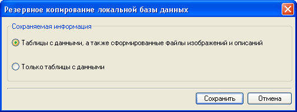

В целях обеспечения сохранности информации, а также для возможности сохранения данных при переустановке системы или перенесении магазина на другую машину программа Melbis Shop имеет функции резервного копирования локальной базы данных, вызываемые из меню главного окна программы "Утилиты - Локальная база данных".
Описываемая здесь утилита резервного копирования касается данных, находящихся на локальной машине, и не затрагивает данные, хранящиеся на сервере. Резервное копирование данных, хранящихся на сервере, как правило осуществляется силами его владельцев или может быть выполнено отдельно - см.раздел "Резервное копирование серверной базы данных".
Также следует учесть, что резервное копирование локальной базы данных не включает в себя создание копий исходных изображений. Создать копии исходных изображений можно с помощью стандартной команды проводника или файлового менеджера "копировать", предварительно воспользовавшись функцией "Собрать исходные изображения вместе".
При резервном копировании следует указать сохраняемую информацию:

После выбора сохраняемой информации и нажатия кнопки "Сохранить" файлу-архиву присваивается имя вида "Local_GGGG_MM_DD.zip" (где GGGG-год, MM-номер месяца, DD-число) и запрашивается место для его сохранения. По завершении сохранения выдается соответствующее сообщение.